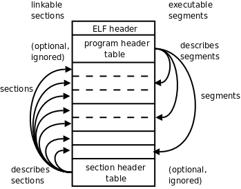

第 18 章 x86 汇编程序基础
要彻底搞清楚 C 语言的原理，就必须深入到指令一层去理解。你写一行 C 代码，编译器会生成什么样的指令，要做到心中有数。本章介绍汇编程序的一些基础知识。汇编不是本书的重点，本书要求读者能看懂基本的汇编程序而不要求会写汇编程序，下一章将在汇编的基础上讨论 C 语言的原理。
1. 最简单的汇编程序
例 18.1. 最简单的汇编程序
#PURPOSE: Simple program that exits and returns a
# status code back to the Linux kernel
#
#INPUT: none
#
#OUTPUT: returns a status code. This can be viewed
# by typing
#
# echo $?
#
# after running the program
#
#VARIABLES:
# %eax holds the system call number
# %ebx holds the return status
#
.section .data
.section .text
.globl _start
_start:
movl $1, %eax # this is the linux kernel command
# number (system call) for exiting
# a program
movl $4, %ebx # this is the status number we will
# return to the operating system.
# Change this around and it will
# return different things to
# echo $?
int $0x80 # this wakes up the kernel to run
# the exit command
把这个程序保存成文件 hello.s （汇编程序通常以 .s 作为文件名后缀），用汇编器（Assembler）as 把汇编程序中的助记符翻译成机器指令，生成目标文件 hello.o：
$ as hello.s -o hello.o
然后用链接器（Linker，或 Link Editor）ld 把目标文件 hello.o 链接成可执行文件hello：
$ ld hello.o -o hello
为什么用汇编器翻译成机器指令了还不行，还要有一个链接的步骤呢？链接主要有两个作用，一是修改目标文件中的信息，对地址做重定位，在本章第 5.2 节「可执行文件」详细解释，二是把多个目标文件合并成一个可执行文件，在第 19 章「汇编与 C 之间的关系」第 2 节「main 函数和启动例程」详细解释。我们这个例子虽然只有一个目标文件，但也需要经过链接才能成为可执行文件。
现在执行这个程序，它只做了一件事就是退出，退出状态是 4，第 3 章「简单函数」第 2 节「自定义函数」讲过在 Shell 中可以用特殊变量 $? 得到上一条命令的退出状态：
$ ./hello
$ echo $?
4
所以这段汇编代码相当于在 C 程序的 main 函数中 return 4;。为什么会相当呢？我们在第 19 章「汇编与 C 之间的关系」第 2 节「main 函数和启动例程」详细解释。
下面逐行分析这个汇编程序。首先，#号表示单行注释，类似于 C 语言的 // 注释。
.section .data
汇编程序中以 . 开头的名称并不是指令的助记符，不会被翻译成机器指令，而是给汇编器一些特殊指示，称为汇编指示（Assembler Directive）或伪操作（Pseudo-operation），由于它不是真正的指令所以加个「伪」字。.section 指示把代码划分成若干个段（Section），程序被操作系统加载执行时，每个段被加载到不同的地址，操作系统对不同的页面设置不同的读、写、执行权限。.data 段保存程序的数据，是可读可写的，相当于 C 程序的全局变量。本程序中没有定义数据，所以 .data 段是空的。
.section .text
.text 段保存代码，是只读和可执行的，后面那些指令都属于 .text 段。
.globl _start
_start 是一个符号（Symbol），符号在汇编程序中代表一个地址，可以用在指令中，汇编程序经过汇编器的处理之后，所有的符号都被替换成它所代表的地址值。在 C 语言中我们通过变量名访问一个变量，其实就是读写某个地址的内存单元，我们通过函数名调用一个函数，其实就是跳转到该函数第一条指令所在的地址，所以变量名和函数名都是符号，本质上是代表内存地址的。
.globl 指示告诉汇编器，_start 这个符号要被链接器用到，所以要在目标文件的符号表中标记它是一个全局符号（在本章第 5.1 节「目标文件」详细解释）。_start 就像 C 程序的 main 函数一样特殊，是整个程序的入口，链接器在链接时会查找目标文件中的 _start 符号代表的地址，把它设置为整个程序的入口地址，所以每个汇编程序都要提供一个 _start 符号并且用 .globl 声明。如果一个符号没有用 .globl 声明，就表示这个符号不会被链接器用到。
_start:
这里定义了 _start 符号，汇编器在翻译汇编程序时会计算每个数据对象和每条指令的地址，当看到这样一个符号定义时，就把它后面一条指令的地址作为这个符号所代表的地址。而 _start 这个符号又比较特殊，它所代表的地址是整个程序的入口地址，所以下一条指令 movl $1, %eax 就成了程序中第一条被执行的指令。
movl $1, %eax
这是一条数据传送指令，这条指令要求 CPU 内部产生一个数字1并保存到 eax 寄存器中。mov 的后缀 l 表示 long，说明是 32 位的传送指令。这条指令不要求 CPU 读内存，1 这个数是在 CPU 内部产生的，称为立即数（Immediate）。在汇编程序中，立即数前面要加 $，寄存器名前面要加 %，以便跟符号名区分开。以后我们会看到 mov 指令还有另外几种形式，但数据传送方向都是一样的，第一个操作数总是源操作数，第二个操作数总是目标操作数。
movl $4, %ebx
和上一条指令类似，生成一个立即数 4 并保存到 ebx 寄存器中。
int $0x80
前两条指令都是为这条指令做准备的，执行这条指令时发生以下动作：
int指令称为软中断指令，可以用这条指令故意产生一个异常，上一章讲过，异常的处理和中断类似，CPU 从用户模式切换到特权模式，然后跳转到内核代码中执行异常处理程序。int指令中的立即数0x80是一个参数，在异常处理程序中要根据这个参数决定如何处理，在 Linux 内核中int $0x80这种异常称为系统调用（System Call）。内核提供了很多系统服务供用户程序使用，但这些系统服务不能像库函数（比如printf）那样调用，因为在执行用户程序时 CPU 处于用户模式，不能直接调用内核函数，所以需要通过系统调用切换 CPU 模式，经由异常处理程序进入内核，用户程序只能通过寄存器传几个参数，之后就要按内核设计好的代码路线走，而不能由用户程序随心所欲，想调哪个内核函数就调哪个内核函数，这样可以保证系统服务被安全地调用。在调用结束之后，CPU 再切换回用户模式，继续执行int $0x80的下一条指令，在用户程序看来就像函数调用和返回一样。eax和ebx的值是传递给系统调用的两个参数。eax的值是系统调用号，Linux 的各种系统调用都是由int $0x80指令引发的，内核需要通过eax判断用户要调哪个系统调用，_exit的系统调用号是1。ebx的值是传给_exit的参数，表示退出状态。大多数系统调用完成之后会返回用户空间继续执行后面的指令，而_exit系统调用比较特殊，它会终止掉当前进程，而不是返回用户空间继续执行。
x86 汇编的两种语法：intel 语法和 AT&T 语法
x86 汇编一直存在两种不同的语法，在 intel 的官方文档中使用 intel 语法，Windows 也使用 intel 语法，而 UNIX 平台的汇编器一直使用 AT&T 语法，所以本书使用 AT&T 语法。movl %edx,%eax 这条指令如果用 intel 语法来写，就是 mov eax,edx，寄存器名不加 % 号，源操作数和目标操作数的位置互换，字长也不是用指令的后缀l表示而是用另外的方式表示。本书不详细讨论这两种语法之间的区别，读者可以参考 Assembly HOWTO。
介绍 x86 汇编的书很多，UNIX 平台的书都采用 AT&T 语法，例如 GroudUp，其它书一般采用 intel 语法，例如 x86 Assembly。
习题
- 把本节例子中的
int $0x80指令去掉，汇编、链接也能通过，但是执行的时候出现段错误，你能解释其原因吗？
2. x86 的寄存器
x86 的通用寄存器有 eax、ebx、ecx、edx、edi、esi。这些寄存器在大多数指令中是可以任意选用的，比如 movl 指令可以把一个立即数传送到 eax 中，也可传送到 ebx 中。但也有一些指令规定只能用其中某个寄存器做某种用途，例如除法指令 idivl 要求被除数在 eax 寄存器中，edx 寄存器必须是 0，而除数可以在任意寄存器中，计算结果的商数保存在 eax 寄存器中（覆盖原来的被除数），余数保存在 edx 寄存器中。也就是说，通用寄存器对于某些特殊指令来说也不是通用的。
x86 的特殊寄存器有 ebp、esp、eip、eflags。eip 是程序计数器，eflags 保存着计算过程中产生的标志位，其中包括第 14 章「计算机中数的表示」第 3 节「整数的加减运算」讲过的进位标志、溢出标志、零标志和负数标志，在 intel 的手册中这几个标志位分别称为 CF、OF、ZF、SF。ebp 和 esp 用于维护函数调用的栈帧，在第 19 章「汇编与 C 之间的关系」第 1 节「函数调用」详细讨论。
3. 第二个汇编程序
例 18.2. 求一组数的最大值的汇编程序
#PURPOSE: This program finds the maximum number of a
# set of data items.
#
#VARIABLES: The registers have the following uses:
#
# %edi - Holds the index of the data item being examined
# %ebx - Largest data item found
# %eax - Current data item
#
# The following memory locations are used:
#
# data_items - contains the item data. A 0 is used
# to terminate the data
#
.section .data
data_items: #These are the data items
.long 3,67,34,222,45,75,54,34,44,33,22,11,66,0
.section .text
.globl _start
_start:
movl $0, %edi # move 0 into the index register
movl data_items(,%edi,4), %eax # load the first byte of data
movl %eax, %ebx # since this is the first item, %eax is
# the biggest
start_loop: # start loop
cmpl $0, %eax # check to see if we've hit the end
je loop_exit
incl %edi # load next value
movl data_items(,%edi,4), %eax
cmpl %ebx, %eax # compare values
jle start_loop # jump to loop beginning if the new
# one isn't bigger
movl %eax, %ebx # move the value as the largest
jmp start_loop # jump to loop beginning
loop_exit:
# %ebx is the status code for the _exit system call
# and it already has the maximum number
movl $1, %eax #1 is the _exit() syscall
int $0x80
汇编、链接、运行：
$ as max.s -o max.o
$ ld max.o -o max
$ ./max
$ echo $?
这个程序在一组数中找到一个最大的数，并把它作为程序的退出状态。这组数在 .data 段给出：
data_items:
.long 3,67,34,222,45,75,54,34,44,33,22,11,66,0
.long 指示声明一组数，每个数占 32 位，相当于 C 语言中的数组。这个数组开头定义了一个符号 data_items，汇编器会把数组的首地址作为 data_items 符号所代表的地址，data_items 类似于 C 语言中的数组名。data_items 这个标号没有用 .globl 声明，因为它只在这个汇编程序内部使用，链接器不需要用到这个名字。除了 .long 之外，常用的数据声明还有：
.byte，也是声明一组数，每个数占 8 位.ascii，例如.ascii "Hello world"，声明 11 个数，取值为相应字符的 ASCII 码。注意，和 C 语言不同，这样声明的字符串末尾是没有'\0'字符的，如果需要以'\0'结尾可以声明为.ascii "Hello world\0"。
data_items 数组的最后一个数是 0，我们在一个循环中依次比较每个数，碰到 0 的时候让循环终止。在这个循环中：
edi寄存器保存数组中的当前位置，每次比较完一个数就把edi的值加1，指向数组中的下一个数。ebx寄存器保存到目前为止找到的最大值，如果发现有更大的数就更新ebx的值。eax寄存器保存当前要比较的数，每次更新edi之后，就把下一个数读到eax中。
_start:
movl $0, %edi
初始化 edi，指向数组的第 0 个元素。
movl data_items(,%edi,4), %eax
这条指令把数组的第 0 个元素传送到 eax 寄存器中。data_items 是数组的首地址，edi 的值是数组的下标，4 表示数组的每个元素占 4 字节，那么数组中第 edi 个元素的地址应该是 data_items + edi * 4，写在指令中就是 data_items(,%edi,4)，这种地址表示方式在下一节还会详细解释。
movl %eax, %ebx
ebx 的初始值也是数组的第 0 个元素。下面我们进入一个循环，循环的开头定义一个符号 start_loop，循环的末尾之后定义一个符号 loop_exit。
start_loop:
cmpl $0, %eax
je loop_exit
比较 eax 的值是不是 0，如果是 0 就说明到达数组末尾了，就要跳出循环。cmpl 指令将两个操作数相减，但计算结果并不保存，只是根据计算结果改变 eflags 寄存器中的标志位。如果两个操作数相等，则计算结果为 0，eflags 中的 ZF 位置 1。je 是一个条件跳转指令，它检查 eflags 中的 ZF 位，ZF 位为 1 则发生跳转，ZF 位为 0 则不跳转，继续执行下一条指令。可见比较指令和条件跳转指令是配合使用的，前者改变标志位，后者根据标志位决定是否跳转。je 可以理解成 jump if equal，如果参与比较的两数相等则跳转。
incl %edi
movl data_items(,%edi,4), %eax
将 edi 的值加 1，把数组中的下一个数传送到 eax 寄存器中。
cmpl %ebx, %eax
jle start_loop
把当前数组元素 eax 和目前为止找到的最大值 ebx 做比较，如果前者小于等于后者，则最大值没有变，跳转到循环开头比较下一个数，否则继续执行下一条指令。jle 表示 jump if less than or equal。
movl %eax, %ebx
jmp start_loop
更新了最大值 ebx 然后跳转到循环开头比较下一个数。jmp 是一个无条件跳转指令，什么条件也不判断，直接跳转。loop_exit 符号后面的指令调 _exit 系统调用退出程序。
4. 寻址方式
通过上一节的例子我们了解到，访问内存时在指令中可以用多种方式表示内存地址，比如可以用数组基地址、元素长度和下标三个量来表示，增加了寻址的灵活性。本节介绍 x86 常用的几种寻址方式（Addressing Mode）。内存寻址在指令中可以表示成如下的通用格式：
ADDRESS_OR_OFFSET(%BASE_OR_OFFSET,%INDEX,MULTIPLIER)
它所表示的地址可以这样计算出来：
FINAL ADDRESS = ADDRESS_OR_OFFSET + BASE_OR_OFFSET + MULTIPLIER * INDEX
其中 ADDRESS_OR_OFFSET 和 MULTIPLIER 必须是常数，BASE_OR_OFFSET 和 INDEX 必须是寄存器。在有些寻址方式中会省略这 4 项中的某些项，相当于这些项是 0。
- 直接寻址（Direct Addressing Mode）。只使用
ADDRESS_OR_OFFSET寻址，例如movl ADDRESS, %eax把ADDRESS地址处的 32 位数传送到eax寄存器。 - 变址寻址（Indexed Addressing Mode） 。上一节的
movl data_items(,%edi,4), %eax就属于这种寻址方式，用于访问数组元素比较方便。 - 间接寻址（Indirect Addressing Mode）。只使用
BASE_OR_OFFSET寻址，例如movl (%eax), %ebx，把eax寄存器的值看作地址，把内存中这个地址处的 32 位数传送到ebx寄存器。注意和movl %eax, %ebx区分开。 - 基址寻址（Base Pointer Addressing Mode）。只使用
ADDRESS_OR_OFFSET和BASE_OR_OFFSET寻址，例如movl 4(%eax), %ebx，用于访问结构体成员比较方便，例如一个结构体的基地址保存在eax寄存器中，其中一个成员在结构体内的偏移量是 4 字节，要把这个成员读上来就可以用这条指令。 - 立即数寻址（Immediate Mode）。就是指令中有一个操作数是立即数，例如
movl $12, %eax中的$12，这其实跟寻址没什么关系，但也算作一种寻址方式。 - 寄存器寻址（Register Addressing Mode）。就是指令中有一个操作数是寄存器，例如
movl $12, %eax中的%eax，这跟内存寻址没什么关系，但也算作一种寻址方式。在汇编程序中寄存器用助记符来表示，在机器指令中则要用几个 Bit 表示寄存器的编号，这几个 Bit 也可以看作寄存器的地址，但是和内存地址不在一个地址空间。
5. ELF文件
ELF 文件格式是一个开放标准，各种 UNIX 系统的可执行文件都采用 ELF 格式，它有三种不同的类型：
- 可重定位的目标文件（Relocatable，或者 Object File）
- 可执行文件（Executable）
- 共享库（Shared Object，或者 Shared Library）
共享库留到第 20 章「链接详解」第 4 节「共享库」再详细介绍，本节我们以本章第 3 节例 18.2 「求一组数的最大值的汇编程序」为例讨论目标文件和可执行文件的格式。现在详细解释一下这个程序的汇编、链接、运行过程：
- 写一个汇编程序保存成文本文件
max.s。 - 汇编器读取这个文本文件转换成目标文件
max.o，目标文件由若干个 Section 组成，我们在汇编程序中声明的.section会成为目标文件中的 Section，此外汇编器还会自动添加一些 Section（比如符号表）。 - 然后链接器把目标文件中的 Section 合并成几个 Segment[28]，生成可执行文件
max。 - 最后加载器（Loader）根据可执行文件中的 Segment 信息加载运行这个程序。
[28] Segment 也可以翻译成「段」，为了避免混淆，在本书中只把 Section 称为段，而 Segment 直接用英文。
ELF 格式提供了两种不同的视角，链接器把 ELF 文件看成是 Section 的集合，而加载器把 ELF 文件看成是 Segment 的集合。如下图所示。
图 18.1. ELF 文件

左边是从链接器的视角来看 ELF 文件，开头的 ELF Header 描述了体系结构和操作系统等基本信息，并指出 Section Header Table 和 Program Header Table 在文件中的什么位置，Program Header Table 在链接过程中用不到，所以是可有可无的，Section Header Table 中保存了所有 Section 的描述信息，通过 Section Header Table 可以找到每个 Section 在文件中的位置。右边是从加载器的视角来看 ELF 文件，开头是 ELF Header，Program Header Table 中保存了所有 Segment 的描述信息，Section Header Table 在加载过程中用不到，所以是可有可无的。从上图可以看出，一个 Segment 由一个或多个 Section 组成，这些 Section 加载到内存时具有相同的访问权限。有些 Section 只对链接器有意义，在运行时用不到，也不需要加载到内存，那么就不属于任何 Segment。注意 Section Header Table 和 Program Header Table 并不是一定要位于文件的开头和结尾，其位置由 ELF Header 指出，上图这么画只是为了清晰。
目标文件需要链接器做进一步处理，所以一定有 Section Header Table；可执行文件需要加载运行，所以一定有 Program Header Table；而共享库既要加载运行，又要在加载时做动态链接，所以既有 Section Header Table 又有 Program Header Table。
5.1. 目标文件
下面用 readelf 工具读出目标文件 max.o 的 ELF Header 和 Section Header Table，然后我们逐段分析。
$ readelf -a max.o
ELF Header:
Magic: 7f 45 4c 46 01 01 01 00 00 00 00 00 00 00 00 00
Class: ELF32
Data: 2's complement, little endian
Version: 1 (current)
OS/ABI: UNIX - System V
ABI Version: 0
Type: REL (Relocatable file)
Machine: Intel 80386
Version: 0x1
Entry point address: 0x0
Start of program headers: 0 (bytes into file)
Start of section headers: 200 (bytes into file)
Flags: 0x0
Size of this header: 52 (bytes)
Size of program headers: 0 (bytes)
Number of program headers: 0
Size of section headers: 40 (bytes)
Number of section headers: 8
Section header string table index: 5
...
ELF Header 中描述了操作系统是 UNIX，体系结构是 80386。Section Header Table 中有 8 个 Section Header，从文件地址 200（0xc8）开始，每个 Section Header 占 40 字节，共 320 字节，到文件地址 0x207 结束。这个目标文件没有 Program Header。文件地址是这样定义的：文件开头第一个字节的地址是 0，然后每个字节占一个地址。
...
Section Headers:
[Nr] Name Type Addr Off Size ES Flg Lk Inf Al
[ 0] NULL 00000000 000000 000000 00 0 0 0
[ 1] .text PROGBITS 00000000 000034 00002a 00 AX 0 0 4
[ 2] .rel.text REL 00000000 0002b0 000010 08 6 1 4
[ 3] .data PROGBITS 00000000 000060 000038 00 WA 0 0 4
[ 4] .bss NOBITS 00000000 000098 000000 00 WA 0 0 4
[ 5] .shstrtab STRTAB 00000000 000098 000030 00 0 0 1
[ 6] .symtab SYMTAB 00000000 000208 000080 10 7 7 4
[ 7] .strtab STRTAB 00000000 000288 000028 00 0 0 1
Key to Flags:
W (write), A (alloc), X (execute), M (merge), S (strings)
I (info), L (link order), G (group), x (unknown)
O (extra OS processing required) o (OS specific), p (processor specific)
There are no section groups in this file.
There are no program headers in this file.
...
从 Section Header 中读出各 Section 的描述信息，其中 .text 和 .data 是我们在汇编程序中声明的 Section，而其它 Section 是汇编器自动添加的。Addr 是这些段加载到内存中的地址（我们讲过程序中的地址都是虚拟地址），加载地址要在链接时填写，现在空缺，所以是全 0。Off 和 Size 两列指出了各 Section 的文件地址，比如 .data 段从文件地址 0x60 开始，一共 0x38 个字节，回去翻一下程序，.data 段定义了 14 个 4 字节的整数，一共是 56 个字节，也就是 0x38。根据以上信息可以描绘出整个目标文件的布局。
表 18.1. 目标文件的布局
| 起始文件地址 | Section 或 Header |
|---|---|
| 0 | ELF Header |
| 0x34 | .text |
| 0x60 | .data |
| 0x98 | .bss（此段为空） |
| 0x98 | .shstrtab |
| 0xc8 | Section Header Table |
| 0x208 | .symtab |
| 0x288 | .strtab |
| 0x2b0 | .rel.text |
这个文件不大，我们直接用 hexdump 工具把目标文件的字节全部打印出来看。
$ hexdump -C max.o
00000000 7f 45 4c 46 01 01 01 00 00 00 00 00 00 00 00 00 |.ELF............|
00000010 01 00 03 00 01 00 00 00 00 00 00 00 00 00 00 00 |................|
00000020 c8 00 00 00 00 00 00 00 34 00 00 00 00 00 28 00 |........4.....(.|
00000030 08 00 05 00 bf 00 00 00 00 8b 04 bd 00 00 00 00 |................|
00000040 89 c3 83 f8 00 74 10 47 8b 04 bd 00 00 00 00 39 |.....t.G.......9|
00000050 d8 7e ef 89 c3 eb eb b8 01 00 00 00 cd 80 00 00 |.~..............|
00000060 03 00 00 00 43 00 00 00 22 00 00 00 de 00 00 00 |....C...".......|
00000070 2d 00 00 00 4b 00 00 00 36 00 00 00 22 00 00 00 |-...K...6..."...|
00000080 2c 00 00 00 21 00 00 00 16 00 00 00 0b 00 00 00 |,...!...........|
00000090 42 00 00 00 00 00 00 00 00 2e 73 79 6d 74 61 62 |B.........symtab|
000000a0 00 2e 73 74 72 74 61 62 00 2e 73 68 73 74 72 74 |..strtab..shstrt|
000000b0 61 62 00 2e 72 65 6c 2e 74 65 78 74 00 2e 64 61 |ab..rel.text..da|
000000c0 74 61 00 2e 62 73 73 00 00 00 00 00 00 00 00 00 |ta..bss.........|
000000d0 00 00 00 00 00 00 00 00 00 00 00 00 00 00 00 00 |................|
*
000000f0 1f 00 00 00 01 00 00 00 06 00 00 00 00 00 00 00 |................|
00000100 34 00 00 00 2a 00 00 00 00 00 00 00 00 00 00 00 |4...*...........|
00000110 04 00 00 00 00 00 00 00 1b 00 00 00 09 00 00 00 |................|
00000120 00 00 00 00 00 00 00 00 b0 02 00 00 10 00 00 00 |................|
00000130 06 00 00 00 01 00 00 00 04 00 00 00 08 00 00 00 |................|
00000140 25 00 00 00 01 00 00 00 03 00 00 00 00 00 00 00 |%...............|
00000150 60 00 00 00 38 00 00 00 00 00 00 00 00 00 00 00 |`...8...........|
00000160 04 00 00 00 00 00 00 00 2b 00 00 00 08 00 00 00 |........+.......|
00000170 03 00 00 00 00 00 00 00 98 00 00 00 00 00 00 00 |................|
00000180 00 00 00 00 00 00 00 00 04 00 00 00 00 00 00 00 |................|
00000190 11 00 00 00 03 00 00 00 00 00 00 00 00 00 00 00 |................|
000001a0 98 00 00 00 30 00 00 00 00 00 00 00 00 00 00 00 |....0...........|
000001b0 01 00 00 00 00 00 00 00 01 00 00 00 02 00 00 00 |................|
000001c0 00 00 00 00 00 00 00 00 08 02 00 00 80 00 00 00 |................|
000001d0 07 00 00 00 07 00 00 00 04 00 00 00 10 00 00 00 |................|
000001e0 09 00 00 00 03 00 00 00 00 00 00 00 00 00 00 00 |................|
000001f0 88 02 00 00 28 00 00 00 00 00 00 00 00 00 00 00 |....(...........|
00000200 01 00 00 00 00 00 00 00 00 00 00 00 00 00 00 00 |................|
00000210 00 00 00 00 00 00 00 00 00 00 00 00 00 00 00 00 |................|
00000220 00 00 00 00 03 00 01 00 00 00 00 00 00 00 00 00 |................|
00000230 00 00 00 00 03 00 03 00 00 00 00 00 00 00 00 00 |................|
00000240 00 00 00 00 03 00 04 00 01 00 00 00 00 00 00 00 |................|
00000250 00 00 00 00 00 00 03 00 0c 00 00 00 0e 00 00 00 |................|
00000260 00 00 00 00 00 00 01 00 17 00 00 00 23 00 00 00 |............#...|
00000270 00 00 00 00 00 00 01 00 21 00 00 00 00 00 00 00 |........!.......|
00000280 00 00 00 00 10 00 01 00 00 64 61 74 61 5f 69 74 |.........data_it|
00000290 65 6d 73 00 73 74 61 72 74 5f 6c 6f 6f 70 00 6c |ems.start_loop.l|
000002a0 6f 6f 70 5f 65 78 69 74 00 5f 73 74 61 72 74 00 |oop_exit._start.|
000002b0 08 00 00 00 01 02 00 00 17 00 00 00 01 02 00 00 |................|
000002c0
左边一列是文件地址，中间是每个字节的十六进制表示，右边是把这些字节解释成 ASCII 码所对应的字符。中间有一个 * 号表示省略的部分全是 0。.data 段对应的是这一块：
...bash
00000060 03 00 00 00 43 00 00 00 22 00 00 00 de 00 00 00 |....C...".......|
00000070 2d 00 00 00 4b 00 00 00 36 00 00 00 22 00 00 00 |-...K...6..."...|
00000080 2c 00 00 00 21 00 00 00 16 00 00 00 0b 00 00 00 |,...!...........|
00000090 42 00 00 00 00 00 00 00
...
.data 段将被原封不动地加载到内存中，下一小节会看到 .data 段被加载到内存地址 0x080490a0 ~ 0x080490d7。
.shstrtab 和 .strtab 这两个 Section 中存放的都是 ASCII 码：
...
00 2e 73 79 6d 74 61 62 |B.........symtab|
000000a0 00 2e 73 74 72 74 61 62 00 2e 73 68 73 74 72 74 |..strtab..shstrt|
000000b0 61 62 00 2e 72 65 6c 2e 74 65 78 74 00 2e 64 61 |ab..rel.text..da|
000000c0 74 61 00 2e 62 73 73 00 |ta..bss.........|
...
00 64 61 74 61 5f 69 74 |.........data_it|
00000290 65 6d 73 00 73 74 61 72 74 5f 6c 6f 6f 70 00 6c |ems.start_loop.l|
000002a0 6f 6f 70 5f 65 78 69 74 00 5f 73 74 61 72 74 00 |oop_exit._start.|
...
可见 .shstrtab 段保存着各 Section 的名字，.strtab 段保存着程序中用到的符号的名字。每个名字都是以 '\0' 结尾的字符串。
我们知道，C 语言的全局变量如果在代码中没有初始化，就会在程序加载时用 0 初始化。这种数据属于 .bss 段，在加载时它和 .data 段一样都是可读可写的数据，但是在 ELF 文件中 .data 段需要占用一部分空间保存初始值，而 .bss 段则不需要。也就是说，.bss 段在文件中只占一个 Section Header 而没有对应的 Section，程序加载时 .bss 段占多大内存空间在 Section Header 中描述。在我们这个例子中没有用到 .bss 段，在第 19 章「汇编与 C 之间的关系」第 3 节「变量的存储布局」会看到这样的例子。
我们继续分析 readelf 输出的最后一部分，是从 .rel.text 和 .symtab 这两个 Section 中读出的信息。
...
Relocation section '.rel.text' at offset 0x2b0 contains 2 entries:
Offset Info Type Sym.Value Sym. Name
00000008 00000201 R_386_32 00000000 .data
00000017 00000201 R_386_32 00000000 .data
There are no unwind sections in this file.
Symbol table '.symtab' contains 8 entries:
Num: Value Size Type Bind Vis Ndx Name
0: 00000000 0 NOTYPE LOCAL DEFAULT UND
1: 00000000 0 SECTION LOCAL DEFAULT 1
2: 00000000 0 SECTION LOCAL DEFAULT 3
3: 00000000 0 SECTION LOCAL DEFAULT 4
4: 00000000 0 NOTYPE LOCAL DEFAULT 3 data_items
5: 0000000e 0 NOTYPE LOCAL DEFAULT 1 start_loop
6: 00000023 0 NOTYPE LOCAL DEFAULT 1 loop_exit
7: 00000000 0 NOTYPE GLOBAL DEFAULT 1 _start
No version information found in this file.
.rel.text 告诉链接器指令中的哪些地方需要做重定位，在下一小节详细讨论。
.symtab 是符号表。Ndx 列是每个符号所在的 Section 编号，例如符号 data_items 在第 3 个 Section 里（也就是 .data 段），各 Section 的编号见 Section Header Table。Value 列是每个符号所代表的地址，在目标文件中，符号地址都是相对于该符号所在 Section 的相对地址，比如 data_items 位于 .data 段的开头，所以地址是 0，_start 位于 .text 段的开头，所以地址也是 0，但是 start_loop 和 loop_exit 相对于 .text 段的地址就不是 0 了。从 Bind 这一列可以看出 _start 这个符号是 GLOBAL 的，而其它符号是 LOCAL 的，GLOBAL 符号是在汇编程序中用 .globl 指示声明过的符号。
现在剩下 .text 段没有分析，objdump 工具可以把程序中的机器指令反汇编（Disassemble），那么反汇编的结果是否跟原来写的汇编代码一模一样呢？我们对比分析一下。
$ objdump -d max.o
max.o: file format elf32-i386
Disassembly of section .text:
00000000 <_start>:
0: bf 00 00 00 00 mov $0x0,%edi
5: 8b 04 bd 00 00 00 00 mov 0x0(,%edi,4),%eax
c: 89 c3 mov %eax,%ebx
0000000e <start_loop>:
e: 83 f8 00 cmp $0x0,%eax
11: 74 10 je 23 <loop_exit>
13: 47 inc %edi
14: 8b 04 bd 00 00 00 00 mov 0x0(,%edi,4),%eax
1b: 39 d8 cmp %ebx,%eax
1d: 7e ef jle e <start_loop>
1f: 89 c3 mov %eax,%ebx
21: eb eb jmp e <start_loop>
00000023 <loop_exit>:
23: b8 01 00 00 00 mov $0x1,%eax
28: cd 80 int $0x80
左边是机器指令的字节，右边是反汇编结果。显然，所有的符号都被替换成地址了，比如 je 23，注意没有加 $ 的数表示内存地址，而不表示立即数。这条指令后面的 <loop_exit> 并不是指令的一部分，而是反汇编器从 .symtab 和 .strtab 中查到的符号名称，写在后面是为了有更好的可读性。目前所有指令中用到的符号地址都是相对地址，下一步链接器要修改这些指令，把其中的地址都改成加载时的内存地址，这些指令才能正确执行。
5.2. 可执行文件
现在我们按上一节的步骤分析可执行文件 max，看看链接器都做了什么改动。
$ readelf -a max
ELF Header:
Magic: 7f 45 4c 46 01 01 01 00 00 00 00 00 00 00 00 00
Class: ELF32
Data: 2's complement, little endian
Version: 1 (current)
OS/ABI: UNIX - System V
ABI Version: 0
Type: EXEC (Executable file)
Machine: Intel 80386
Version: 0x1
Entry point address: 0x8048074
Start of program headers: 52 (bytes into file)
Start of section headers: 256 (bytes into file)
Flags: 0x0
Size of this header: 52 (bytes)
Size of program headers: 32 (bytes)
Number of program headers: 2
Size of section headers: 40 (bytes)
Number of section headers: 6
Section header string table index: 3
Section Headers:
[Nr] Name Type Addr Off Size ES Flg Lk Inf Al
[ 0] NULL 00000000 000000 000000 00 0 0 0
[ 1] .text PROGBITS 08048074 000074 00002a 00 AX 0 0 4
[ 2] .data PROGBITS 080490a0 0000a0 000038 00 WA 0 0 4
[ 3] .shstrtab STRTAB 00000000 0000d8 000027 00 0 0 1
[ 4] .symtab SYMTAB 00000000 0001f0 0000a0 10 5 6 4
[ 5] .strtab STRTAB 00000000 000290 000040 00 0 0 1
Key to Flags:
W (write), A (alloc), X (execute), M (merge), S (strings)
I (info), L (link order), G (group), x (unknown)
O (extra OS processing required) o (OS specific), p (processor specific)
There are no section groups in this file.
Program Headers:
Type Offset VirtAddr PhysAddr FileSiz MemSiz Flg Align
LOAD 0x000000 0x08048000 0x08048000 0x0009e 0x0009e R E 0x1000
LOAD 0x0000a0 0x080490a0 0x080490a0 0x00038 0x00038 RW 0x1000
Section to Segment mapping:
Segment Sections...
00 .text
01 .data
There is no dynamic section in this file.
There are no relocations in this file.
There are no unwind sections in this file.
Symbol table '.symtab' contains 10 entries:
Num: Value Size Type Bind Vis Ndx Name
0: 00000000 0 NOTYPE LOCAL DEFAULT UND
1: 08048074 0 SECTION LOCAL DEFAULT 1
2: 080490a0 0 SECTION LOCAL DEFAULT 2
3: 080490a0 0 NOTYPE LOCAL DEFAULT 2 data_items
4: 08048082 0 NOTYPE LOCAL DEFAULT 1 start_loop
5: 08048097 0 NOTYPE LOCAL DEFAULT 1 loop_exit
6: 08048074 0 NOTYPE GLOBAL DEFAULT 1 _start
7: 080490d8 0 NOTYPE GLOBAL DEFAULT ABS __bss_start
8: 080490d8 0 NOTYPE GLOBAL DEFAULT ABS _edata
9: 080490d8 0 NOTYPE GLOBAL DEFAULT ABS _end
No version information found in this file.
在 ELF Header 中，Type 改成了 EXEC，由目标文件变成可执行文件了，Entry point address 改成了 0x8048074（这是 _start 符号的地址），还可以看出，多了两个 Program Header，少了两个 Section Header。
在 Section Header Table 中，.text 和 .data 段的加载地址分别改成了 0x08048074 和 0x080490a0。.bss 段没有用到，所以被删掉了。.rel.text 段就是用于链接过程的，做完链接就没用了，所以也删掉了。
多出来的 Program Header Table 描述了两个 Segment 的信息。.text 段和前面的 ELF Header、Program Header Table 一起组成一个 Segment（FileSiz 指出总长度是 0x9e），.data 段组成另一个 Segment（总长度是 0x38）。VirtAddr 列指出第一个 Segment 加载到虚拟地址 0x08048000（注意在 x86 平台上后面的 PhysAddr 列是没有意义的，并不代表实际的物理地址），第二个 Segment 加载到地址 0x080490a0。Flg 列指出第一个 Segment 的访问权限是可读可执行，第二个 Segment 的访问权限是可读可写。最后一列 Align 的值 0x1000（4K）是 x86 平台的内存页面大小。在加载时文件也要按内存页面大小分成若干页，文件中的一页对应内存中的一页，对应关系如下图所示。
图 18.2. 文件和加载地址的对应关系

这个可执行文件很小，总共也不超过一页大小，但是两个 Segment 必须加载到内存中两个不同的页面，因为 MMU 的权限保护机制是以页为单位的，一个页面只能设置一种权限。此外还规定每个 Segment 在文件页面内偏移多少加载到内存页面仍然要偏移多少，比如第二个 Segment 在文件中的偏移是 0xa0，在内存页面 0x08049000 中的偏移仍然是 0xa0，所以从 0x080490a0 开始，这样规定是为了简化链接器和加载器的实现。从上图也可以看出 .text 段的加载地址应该是 0x08048074，_start 符号位于 .text 段的开头，所以 _start 符号的地址也是 0x08048074，从符号表中可以验证这一点。
原来目标文件符号表中的 Value 都是相对地址，现在都改成绝对地址了。此外还多了三个符号 __bss_start、_edata 和 _end，这些符号在链接脚本中定义，被链接器添加到可执行文件中，链接脚本在第 20 章「链接详解」第 1 节「多目标文件的链接」介绍。
再看一下反汇编的结果：
$ objdump -d max
max: file format elf32-i386
Disassembly of section .text:
08048074 <_start>:
8048074: bf 00 00 00 00 mov $0x0,%edi
8048079: 8b 04 bd a0 90 04 08 mov 0x80490a0(,%edi,4),%eax
8048080: 89 c3 mov %eax,%ebx
08048082 <start_loop>:
8048082: 83 f8 00 cmp $0x0,%eax
8048085: 74 10 je 8048097 <loop_exit>
8048087: 47 inc %edi
8048088: 8b 04 bd a0 90 04 08 mov 0x80490a0(,%edi,4),%eax
804808f: 39 d8 cmp %ebx,%eax
8048091: 7e ef jle 8048082 <start_loop>
8048093: 89 c3 mov %eax,%ebx
8048095: eb eb jmp 8048082 <start_loop>
08048097 <loop_exit>:
8048097: b8 01 00 00 00 mov $0x1,%eax
804809c: cd 80 int $0x80
指令中的相对地址都改成绝对地址了。我们仔细检查一下改了哪些地方。首先看跳转指令，原来目标文件的指令是这样：
...
11: 74 10 je 23 <loop_exit>
...
1d: 7e ef jle e <start_loop>
...
21: eb eb jmp e <start_loop>
...
现在改成了这样：
...
8048085: 74 10 je 8048097 <loop_exit>
...
8048091: 7e ef jle 8048082 <start_loop>
...
8048095: eb eb jmp 8048082 <start_loop>
...
改了吗？其实只是反汇编的结果不同了，指令的机器码根本没变。为什么不用改指令就能跳转到新的地址呢？因为跳转指令中指定的是相对于当前指令向前或向后跳多少字节，而不是指定一个完整的内存地址，内存地址有 32 位，这些跳转指令只有 16 位，显然也不可能指定一个完整的内存地址，这称为相对跳转。这种相对跳转指令只有 16 位，只能在当前指令前后的一个小范围内跳转，不可能跳得太远，也有的跳转指令指定一个完整的内存地址，可以跳到任何地方，这称绝对跳转，在第 20 章「链接详解」第 4.2 节「动态链接的过程」我们会看到这样的例子。
再看内存访问指令，原来目标文件的指令是这样：
...
5: 8b 04 bd 00 00 00 00 mov 0x0(,%edi,4),%eax
...
14: 8b 04 bd 00 00 00 00 mov 0x0(,%edi,4),%eax
...
现在改成了这样：
...
8048079: 8b 04 bd a0 90 04 08 mov 0x80490a0(,%edi,4),%eax
...
8048088: 8b 04 bd a0 90 04 08 mov 0x80490a0(,%edi,4),%eax
...
指令中的地址原本是 0x00000000，现在改成了 0x080409a0（注意是小端字节序）。那么链接器怎么知道要改这两处呢？是根据目标文件中的 .rel.text 段提供的重定位信息来改的：
...
Relocation section '.rel.text' at offset 0x2b0 contains 2 entries:
Offset Info Type Sym.Value Sym.Name
00000008 00000201 R_386_32 00000000 .data
00000017 00000201 R_386_32 00000000 .data
...
第一列 Offset 的值就是 .text 段需要改的地方，在 .text 段中的相对地址是 8 和 0x17，正是这两条指令中 00 00 00 00 的位置。